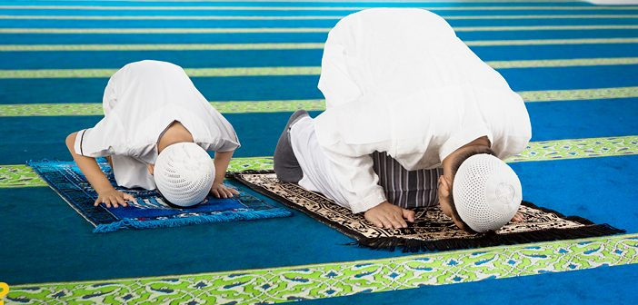

اليوم الثالث: الصلاة
كما ذكرنا في الصفحات السابقة أن شهر رمضان هو شهر العودة إلى الله، ولكن العودة إلى الله لا تكتمل وأنت مهمل صلاتك. لأن الله لا ينظر إلى أعمالٍ كثقل الجبال إن كنت قد قطعت الصلة به. كل شيء قد يذهب هباءً إن ضاعت الصلاة، لأن رسول الله ﷺ قال: "العهد الذي بيننا وبينهم الصلاة، فمن تركها فقد كفر"، وقال ﷺ: "أول ما يُحاسب عليه العبد يوم القيامة الصلاة".
كل يوم نتواصل مع الله من خلال الصلاة. علاقة يومية مباشرة مع خالقنا. ندعو، ونستغفر، ونطلب منه الرحمة والمغفرة، والرزق، والعون، وكل شيء نحتاجه. الصلاة ليست مرة واحدة في اليوم، بل خمس مرات. خمس فرص. خمس محطات عودة. في كل مرة تفوتك صلاة، يكون لديك فرصة أن تعود في التي بعدها في نفس اليوم. كرم من الله، فضل، تخفيف، ورحمة بعباده.
الصلاة جميلة… تجعلك تشعر بالأمان، بالاطمئنان. تكون بين يدي خالقك، الذي خلقك وخلق الكون وكل شيء حولك. الذي كل شيء بيده. القادر أن يدبر كل أمر، ويحل كل مشكلة، وينجيك من كل كرب وهم. هو ينتظرك لكي تتوب وتعود. ودليل ذلك أنك هنا الآن، تقرأ هذه الكلمات. لا تجعل الله ينتظر أكثر من هذا. عد إليه في الصلاة. تواصل معه. اشتق إليه… والله أشد شوقًا لعبده التائب. قال الله تعالى: "واستعينوا بالصبر والصلاة" وقال تعالى: "إن الصلاة تنهى عن الفحشاء والمنكر". لهذا السبب يجب أن نعود إلى الصلاة، لأنها من أهم أركان ديننا، وهي عمود الدين، وهي الحبل المتين بيننا وبين الله تعالى. ومن قطع هذا الحبل، قطع الصلة مع الله، وانقطعت عنه البركات والخيرات والتوفيق.
قد تمشي حياة الإنسان بشكل جميل جدًا، لكنه يكون استدراجًا. لأن الله قال: "فلما نسوا ما ذُكِّروا به فتحنا عليهم أبواب كل شيء حتى إذا فرحوا بما أوتوا أخذناهم بغتة". فكّر بينك وبين نفسك… الصلاة ليست عادة. ليست شيئًا فقط نفعله لأننا اعتدنا عليه. هي نجاة. عندما تصلي، فكّر في الآيات. فكّر في الذكر. فكّر في كل كلمة تقولها. وسوف تشعر بالراحة والطمأنينة والقرب من الله. استمتع بهذه الصلة. استمتع بتلاوتك. استمتع بآيات الله الجميلة. واصبر على الوسواس الذي يحاول أن يبعدك. السجدة… في السجدة سرّ عجيب. فيها روح، فيها طمأنينة ليس بعدها طمأنينة. لأنك تكون أقرب ما تكون إلى الله. قال النبي ﷺ: "أقرب ما يكون العبد من ربه وهو ساجد". كم من الجميل ان تسجد لله في صلاة التراويح براحة وبهدوء واجواء رمضان.
كثير من الناس كانوا ضائعين، لكن أول ما التزموا بصلواتهم استقامت حياتهم، وأصبحوا يرون الدنيا بشكل مختلف تمامًا. هناك فرق كبير بين شخص يصلي لأنه تعوّد، وشخص يصلي لأنه محتاج الله. لأنه يحب الله. لأنه يريد الرحمة والمغفرة والنجاة من النار في كل وقت. أعلم أنه من الصعب أن تعود للصلاة. لا تنتظر الشعور الذي سيدفعك لتبدأ. لن يأتي الشعور أولًا… الطاعة تأتي أولًا، ثم يأتي الشعور بعدها.
أنت الآن في أعظم جهاد… جهاد النفس. أمامك خياران: إما أن تختار الله، فتجد راحة في الدنيا والآخرة، لأن الله يقول: "ألا بذكر الله تطمئن القلوب"، وإما أن تختار الشهوات، فتنتصر عليك نفسك. ابدأ الآن. لا غدًا. اجبر نفسك عشر دقائق فقط. قم، توضأ، وصلِّ ركعتين لله. واطلب منه أن يهديك، أن يثبتك، أن يقوي إيمانك. إن لم تبادر أنت الآن، فلن يفعل أحد ذلك عنك يا أخي/أختي. قل: يا الله. حسبنا الله. وسلّم نفسك لله.